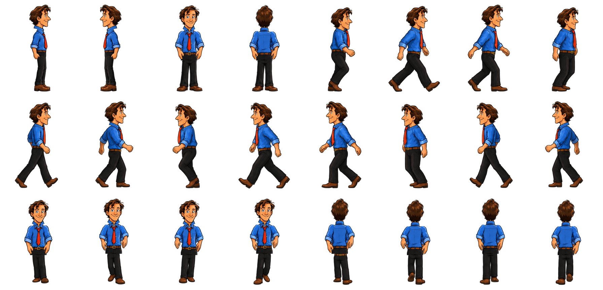
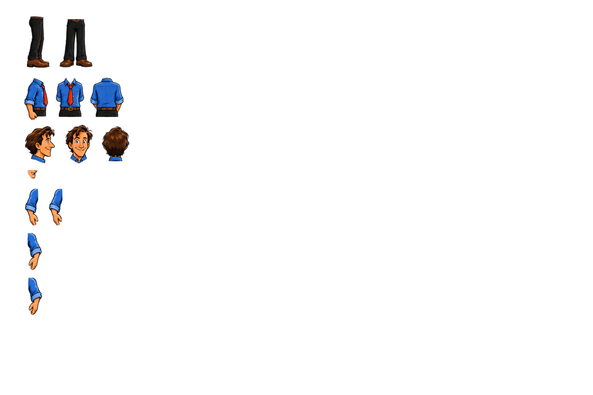
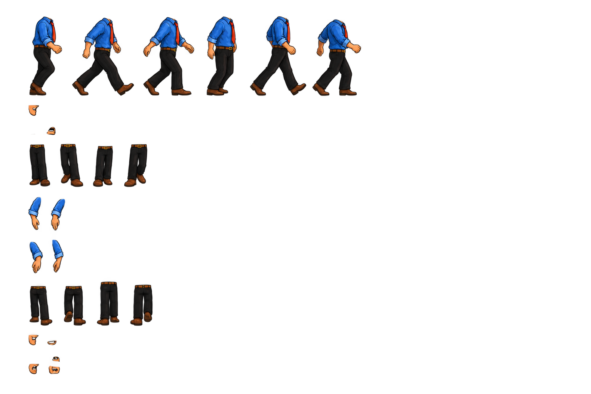
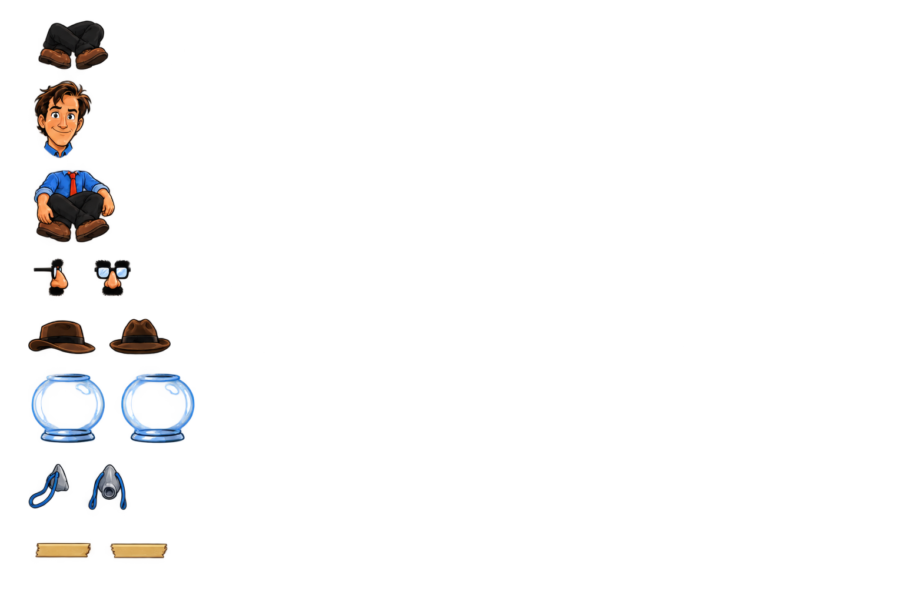

24 sammensatte stå- og gåruter. Transparent PNG, 1792 × 864. Kun Zak, kostyme 1.
Første pilot til kontroll. 51 deler importert: 38 ok, 13 kontrollmerknader, ingen mangler. Ikke prøvd i spillmotoren. Les kontrollnotatet.



